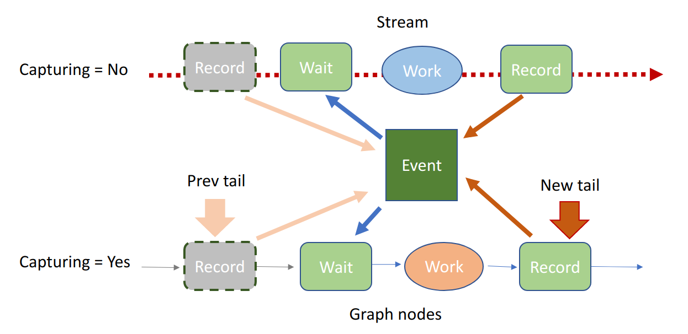

The launch system needed a rewrite to support CUDA graphs in the following ways:
Other enhancements:
Things that needed a redesign to support this effort:
Since ncclWork's could be in either the fifo (uncaptured) or persistent graph memory (captured), the kernel code needed to be able to know how to locate the next ncclWork in either case. Emphasis was given to finding a way that was flexible enough to handle both cases without requiring separate code paths during traversal kernel-side. The approach settled on was to make ncclWork's reside in a linked list where each ncclWork would have an integral "next" field encoded as an offset (positive or negative) from the "head" ncclWork pointer kernel argument. The head element for each channel would be located at "head + blockIdx.x"
With the "head" ncclWork pointer kernel argument being used in both formulas for the head and next values for each channel's linked list, it was necessary that all channel's ncclWork's be allocated in the same array. Thus the per-channel FIFO allocations have been fused into one allocation shared by all channels. Graph captured ops similarly have all works residing in a single array allocated per launched kernel.
The fifo reclamation policy uses a monotonically increasing 32-bit unsigned credit counter per channel. When a channel has finished executing a kernel, it writes back a credit value that was prescribed to it from the CPU (supplied in the final ncclWork) to a per-channel counter slot. Each credit value X encodes the fact that all ncclWork FIFO indices less than X which were destined to that channel have been consumed. When the CPU needs to look for free space in the FIFO array, it scans all of the per-channel credit return slots and reduces them together via min(X...) to learn that all indices less than min(X...) are free. Credit counters being both 32-bit unsigned and monotonic seems at odds due to wraparound. This is handled using special less-than comparison logic that assumes no two credit values could have a difference requiring more than 31 bits to encode (for example, less_than(0xffffffff, 0) would return true). Since the fifo array size is a power of 2 which is significantly smaller than pow(2,31) this becomes easy to enforce.
NCCL requires our device-side communication FIFOs be used in mutually exclusive manner and in a deterministic order agreed on by all ranks. The use of an internal CUDA stream serves both needs. CUDA graph capturing semantics work such that the stream at capture time has no relation to that stream when capturing is off. A captured stream is therefore merely a lane of parallelism in the graph being constructed. Thus we need some mechanism to ensure NCCL kernels launched within a graph order themselves into our internal stream. While CUDA graphs have no facility to submit to an external stream, they do have special node types for waiting on and recording to external CUDA events. This gives us barely enough to recreate our desired exclusivity and deterministic ordering in a way that works with both uncaptured and captured work from possibly many graphs all outstanding together. To achieve this the communicator stores an internal CUDA event which becomes an immediate dependency of every kernel launched and is subsequently recorded over to reflect that kernel's completion, thus ordering the kernel launches exactly like a regular stream. The infrastructure to launch work against this stream-like event either captured or uncaptured has been implemented as a new abstraction called the strong stream (ncclStrongStream).

Simply replacing our internal CUDA stream with a strong stream still wouldn't be enough to correctly handle the case where a captured launch (via cudaGraphLaunch) would immediately be followed by an uncaptured launch. This is because the captured launch would do its proxy op submission in a host execution node, which CUDA executes on some hidden thread, while the uncaptured launch would begin the proxy op submission immediately on the user thread, leading to a non-deterministic proxy op submission order. The simplest way to fix this is to always do proxy op submission, whether it be captured or not, from a second host-only internal strong stream. Thus an uncaptured op no longer submits proxy ops directly during launch, but launches a callback that does this on the new stream. We follow this structure in the implementation, but add the optimization that enqueuing to the host stream is only required if any graphs capturing this communicator are currently alive, so that in the case when there are none we can use the more expedient practice of proxy submission directly from the user thread.
To be more accommodating of unbounded amounts of work being submitted within a ncclGroup, we have moved to linked lists in several places. To ensure our linked lists grow with minimal CPU overhead, we allocate memory from a new datastructure called the ncclMemoryStack. Objects allocated from the stack are grouped into frames, where a new empty frame can be pushed to the top, objects are allocated from the top frame, and the top frame can be popped which deallocates all of its objects in one shot. Object allocation is extremely fast since it typically only incurs bumping a pointer forward, and object deallocation is even faster since there is just a pointer bump backwards for the entire frame.
Frames map very well to ncclGroup's: at ncclGroupStart we push a new frame, then all ops enqueued during that group allocate from this frame, and after all launches have been completed in ncclGruopEnd we pop the frame to reclaim the memory quickly.
Object which do not fit a LIFO lifetime order pull from a ncclMemoryPool which manages a simple linked list of free objects of all the same size. If the free list is empty, new objects are allocated by a backing ncclMemoryStack. This stack cannot be the same that services the LIFO objects as needed in ncclGroup, so each communicator keeps two ncclMemoryStack's: one which only has one frame which is never popped (thus objects are allocated permanently) which is the one the free lists are backed by, and a "scoped" memory stack used for LIFO objects.
All user submitted ops during a ncclGroup are aggregated into a per communicator ncclTasks structure. This struct just tries to collect the ops in a memory compact way, no interesting planning is done until ncclGroupEnd where the tasks are interested and scheduled within ncclKernelPlan's (each ncclKernelPlan having all data needed to launch one kernel). ncclKernelPlan creates an aesthetic separation between persistent communicator state (like credit trackers, etc) which remain in ncclComm, from transient state needed only to schedule the ops within a kernel. Conveniently, it is also the structure we persist with a CUDA graph so that each time the graph is launched only this is consulted on the host side (for proxy op submission).
To accommodate an unbounded number of ops per ncclGroup, we batch ops together into multiple kernels where each kernel tries to occupy at most half of all available slots in the ncclWork FIFO. Batching to separate kernels is required because the total size of the FIFO places a hard bound on how much work a single kernel can hold. This is due to the requirement that all work in the FIFO must be present before the kernel can run. We use a soft bound of half FIFO capacity per kernel to permit overlap between device and host. Thus when translating the tasks of ncclTasks to launchable kernels, we build a linked list of ncclKernelPlan's in the communicator.
Launching the kernels requires special attention to ensure forward progress by CUDA (despite CUDA still not giving us any forward progress guarantees, sigh). For all communicators owned by this thread, first we collect the communicators into cliques according to which "global" communicator they belong to (for when a device belongs to multiple communicators). The cliques are locally ordered according to the order their first op was inserted into the ncclGroup. This ensures the user's program order dictates the order we process multi-communicator devices. We iterate the cliques in the top loop, where for each communicator in the clique we pull and launch only its head kernel plan before moving to the next in-clique communicator. We repeat this until all plans in all comms in this clique have been launched, then progress to the next clique.